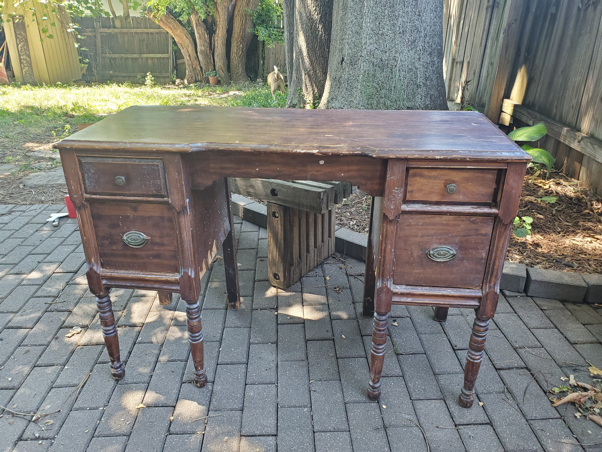
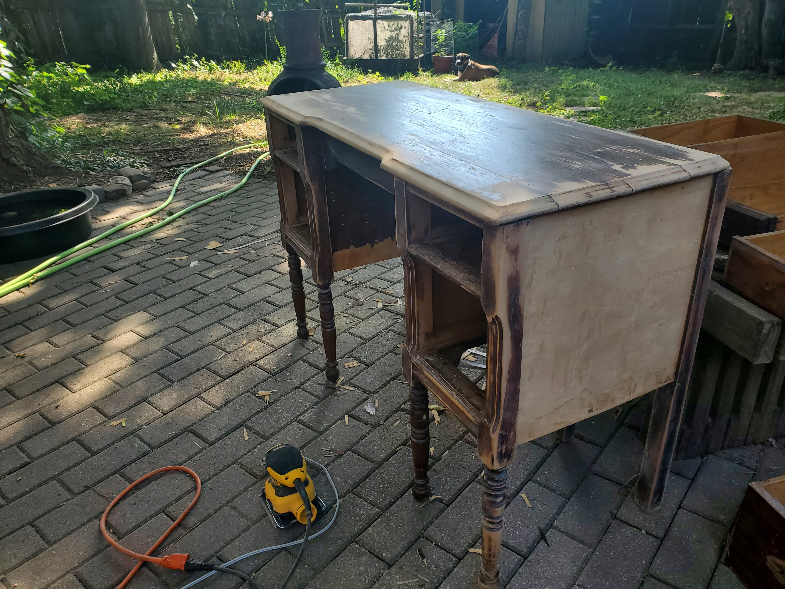
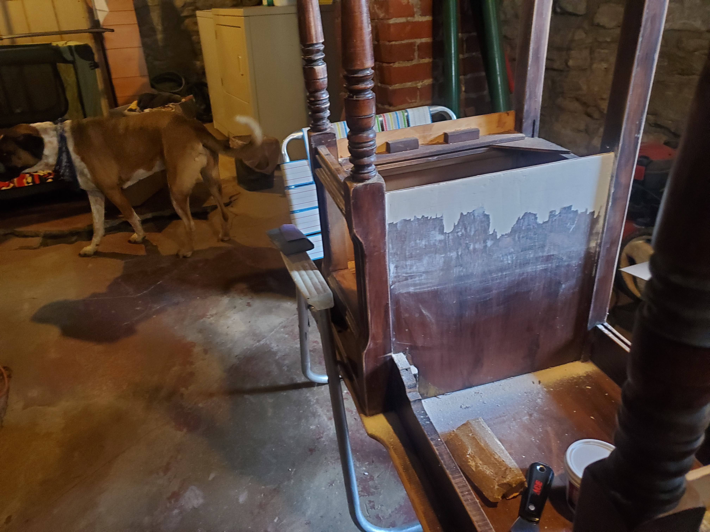
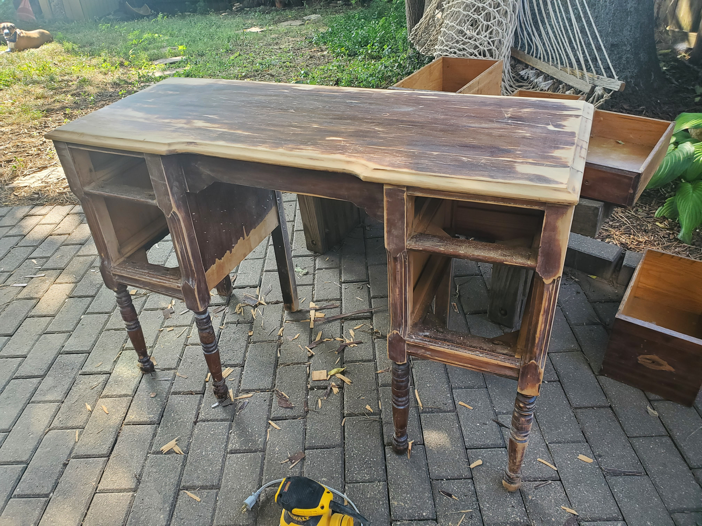
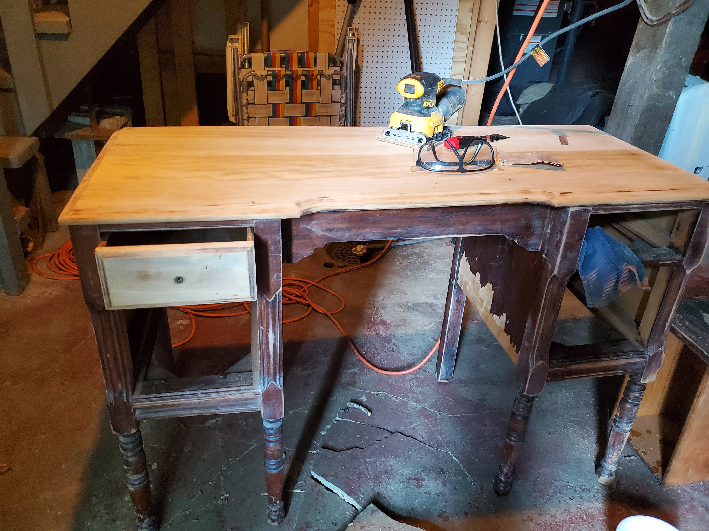
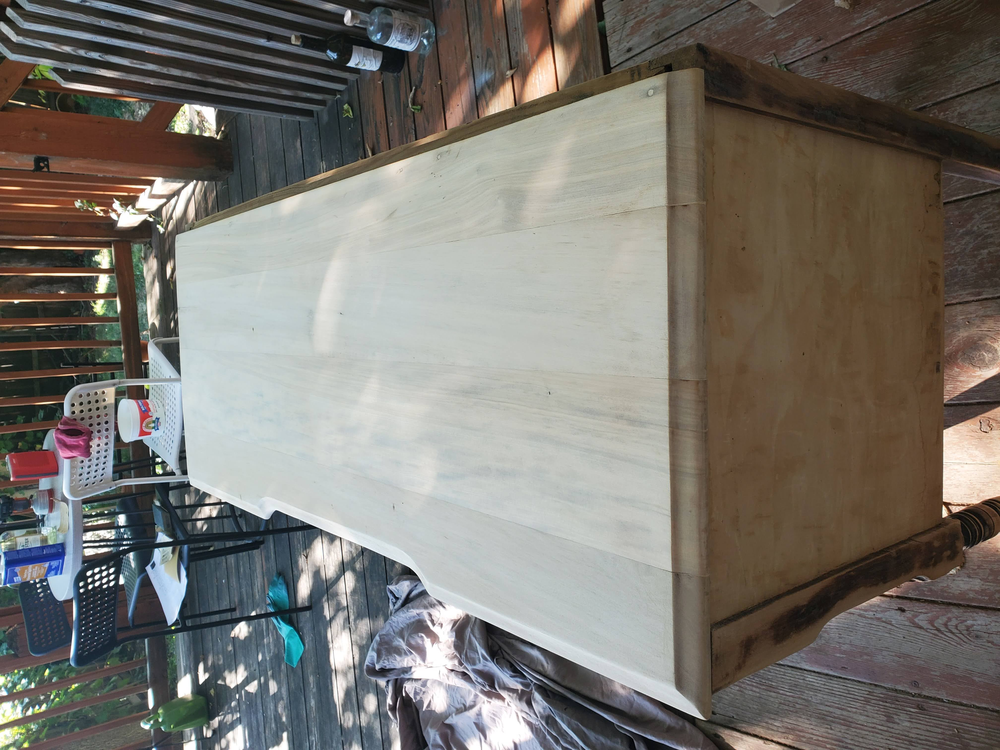
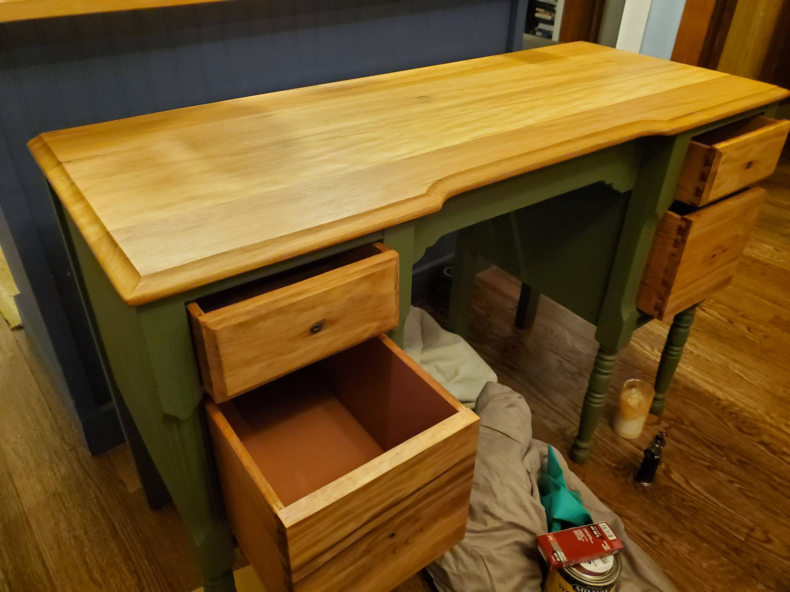

Where to Begin?
Though I grew up working alongside my parents on miscellaneous carpentry and DIY projects, I think my role probably would have been considered closer to a 'go-pher' rather than an assistant. Thus, taking on this project brought along a lot of questions (what tools do I need?, where to start?, why did I get myself into this?).


Since I was starting basically from scratch, I decided my first tool purchase would be a sander - though I have heard the merits of the orbital, I decided to just go with a plain ol' palm sander. Once I had gotten started, I talked to my parents about their experience and recommendations on the next tool to get. It turns out (thankfully!) that they had been planning on getting me a gift for a birthday we had missed during COVID and thus, I got a brand new jigsaw!
First Steps
1: Remove Peeling Veneer and Patch
Though the top and drawers on this piece are solid wood, the sides and a few other places are thin plywood with veneer. I picked this piece up from the curb and I'm assuming it got a bit of water damage before I found it
 
2: Sand Down Top to Remove Existing Finish
For this piece, I wanted to keep as much of the original character as possible, so when I found the top had a beautiful light wood underneath, I was pretty excited!
  
Before & After
First Looks
Almost Finished!
